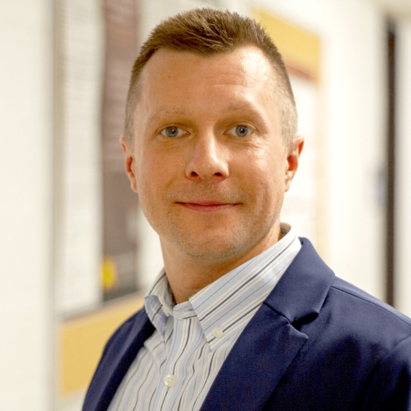

Professor Nathaniel E. Helwig's Homepage
I am a tenured Associate Professor with a 50/50 joint appointment in Psychology and Statistics at the University of Minnesota, Twin Cities. I also hold a graduate faculty appointment in Data Science, and I am a "Core Member" of the University of Minnesota's Data Science and AI Hub. I have research interests in artificial intelligence, computational statistics, machine learning, and multivariate nonparametric methods with a focus on applications in the psychological and biomedical sciences. My papers and open-source software, which are inspired by my collaborations, strive to solve general methodological and computational problems in ways that work both in theory and in practice—when the data are messy.
Table of Contents
This GitHub Pages website has details on the following:
- About: Background and Contact.
- Contribute: Collaborate, Donate, Volunteer.
- CV: Curriculum Vitae (23 pages).
- Research: Publications, Software, Talks.
- Teaching: Intro, Applied, Multivariate, Nonparametric.